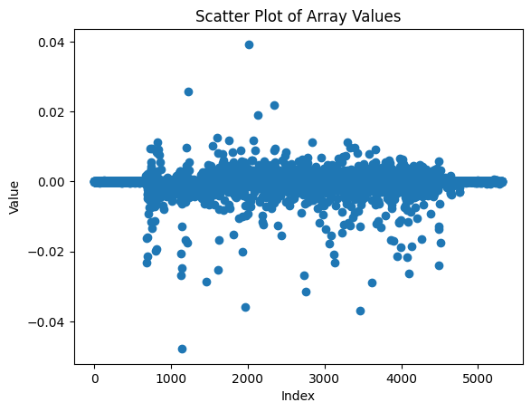
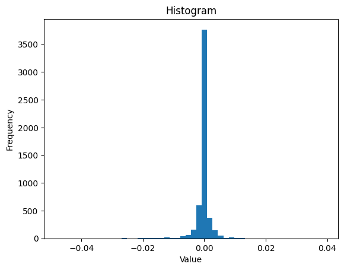
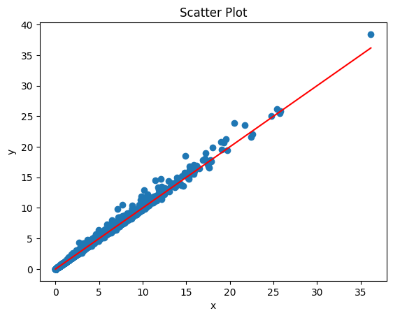
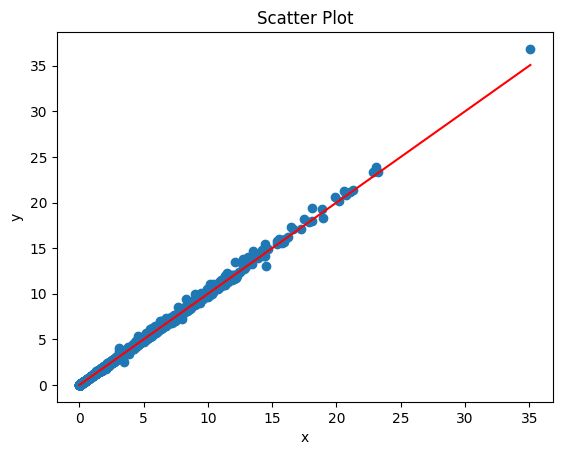

import numpy as np
import h5py
import os
import matplotlib.pyplot as plt
import numpy as np# Comparison functions
def get_diffmats(pre_avg, post_avg):
pre = pre_avg
post = post_avg
# make diffmats
diffmat = pre_avg - post_avg
abs_diffmat = np.abs(diffmat)
# rel_diffmat = abs_diffmat / (np.abs(pre_avg) + np.abs(post_avg) + 1**-16)
# relmax_diffmat = get_relmax(abs_diffmat)
# relmed_diffmat = get_relmed(abs_diffmat)
# rel95_diffmat = get_rel99(abs_diffmat)
# new diff mat
pre_colwise_maxes = np.max(pre, axis=0)
post_colwise_maxes = np.max(post, axis=0)
tot_colwise_maxes = np.maximum(pre_colwise_maxes, post_colwise_maxes)
relmax3_diffmat = diffmat / tot_colwise_maxes
return relmax3_diffmat
#return (abs_diffmat, rel_diffmat, relmax_diffmat, relmed_diffmat, rel95_diffmat)
def get_summary(arr):
summary = {
"mean": np.mean(arr),
"median": np.median(arr),
"std_dev": np.std(arr),
"minimum": np.min(arr),
"maximum": np.max(arr),
"total_sum": np.sum(arr),
"q1": np.percentile(arr, 25),
"q3": np.percentile(arr, 75),
"iqr": np.percentile(arr, 75) - np.percentile(arr, 25)
}
return summary
def get_colwise_summary_df(arr):
# Initialize empty dictionary
col_summaries = {}
# Compute summary statistics for each column and store in dictionary
for col_index in range(arr.shape[1]):
col_name = col_index
col_data = arr[:, col_index]
col_summary = get_summary(col_data)
col_summaries[col_name] = col_summary
# Convert dictionary to DataFrame
col_summaries_df = pd.DataFrame(col_summaries).transpose()
return col_summaries_df
def plot_tols_vs_outs(arr, mintol, maxtol, steps):
# make x and y values
x = np.linspace(maxtol, mintol, steps)
y = []
for tol in x:
num_outs = len(get_outliers(arr, tol))
out_perc = num_outs/arr.size
print(f'tolerance: {round(tol, 2)}, num outs: {num_outs}, out percent: {out_perc}')
y.append(out_perc)
# plot x and y
plt.scatter(x, y)
plt.xlabel('tolerance')
plt.ylabel('percentage of outliers')
plt.show()
return None
def get_outliers(arr, tol):
outs = arr[arr > tol]
return outs
def get_outlier_inds(arr, tol):
# get list of ind tuples
out_inds = np.where(arr > tol)
out_inds_arr = np.array(list(zip(out_inds[0], out_inds[1])))
# get list of row and col inds
row_inds = out_inds[0]
col_inds = out_inds[1]
return [out_inds_arr, row_inds, col_inds]
def plot_hist(arr, bin_num, xlab='Value', ylab='Frequency', title='Histogram'):
plt.hist(arr, bins=bin_num)
plt.title(title)
plt.xlabel(xlab)
plt.ylabel(ylab)
plt.show()
return None
def plot_scatter(x, y, xlab="x", ylab="y", title="Scatter Plot"):
plt.scatter(x, y)
# Plot identity line
plt.plot([min(x), max(x)], [min(x), max(x)], color='red')
# Add labels and title
plt.xlabel(xlab)
plt.ylabel(ylab)
plt.title(title)
# Show the plot
plt.show()
def plot_array(arr):
plt.plot(absdiff_12)
# Adding a title and labels for clarity
plt.title("Array Plot")
plt.xlabel("Index")
plt.ylabel("Value")
# Displaying the plot
plt.show()
return None
def plot_array_points(arr):
plt.scatter(range(len(arr)), arr)
# Adding a title and labels for clarity
plt.title("Array Plot")
plt.xlabel("Index")
plt.ylabel("Value")
# Displaying the plot
plt.show()
return None
def make_outs_df(arr, tol):
# get outliers and their inds
outs = get_outliers(arr, tol)
all_inds, row_inds, col_inds = get_outlier_inds(arr, tol)
# make data
data = {
'name': df_targets['description'].iloc[col_inds],
'bin': row_inds,
'diff': outs,
'system_slims': df_targets['system_slims'].iloc[col_inds],
'cell_slims': df_targets['cell_slims'].iloc[col_inds],
'organ_slims': df_targets['organ_slims'].iloc[col_inds],
'developmental_slims': df_targets['developmental_slims'].iloc[col_inds]
}
# make df
df = pd.DataFrame(data)
# sort by ascending difference
df_sorted = df.sort_values('diff')
return df_sorted
with open('/grand/TFXcan/imlab/users/lvairus/shared_folder/enformer_pipeline/metadata/lvairus_3run_intervals.txt') as f:
intervals = f.read().splitlines()
intervals = [i.strip('\"') for i in intervals]f1 = h5py.File('/grand/TFXcan/imlab/users/lvairus/shared_folder/enformer_pipeline/3run_enformer_test2/predictions_folder/reference_enformer_minimal_some_regions/predictions_2023-07-21/3run_enformer_predictions/reference_enformer_minimal/haplotype0/chr14_50000000_50114688_predictions.h5')
e1 = f1['chr14_50000000_50114688'][()]
e1[:2]array([[0.15065545, 0.19951393, 0.12778857, ..., 0.0090127 , 0.02072694,
0.07220903],
[0.13824955, 0.23091447, 0.1988252 , ..., 0.01056695, 0.02135748,
0.08566103]], dtype=float32)f2 = h5py.File('/grand/TFXcan/imlab/users/lvairus/shared_folder/enformer_pipeline/3run_enformer_test2/predictions_folder/reference_enformer_minimal_some_regions/predictions_2023-07-21/3run_enformer_predictions/reference_enformer_minimal/haplotype0/chr14_50057344_50172032_predictions.h5')
e2 = f2['chr14_50057344_50172032'][()]
e2[:2]array([[0.09927819, 0.18940099, 0.1272915 , ..., 0.00978422, 0.03377192,
0.02656003],
[0.10379894, 0.18952276, 0.11001199, ..., 0.00488043, 0.02240965,
0.0175203 ]], dtype=float32)f3 = h5py.File('/grand/TFXcan/imlab/users/lvairus/shared_folder/enformer_pipeline/3run_enformer_test2/predictions_folder/reference_enformer_minimal_some_regions/predictions_2023-07-21/3run_enformer_predictions/reference_enformer_minimal/haplotype0/chr14_50114688_50229376_predictions.h5')
e3 = f3['chr14_50114688_50229376'][()]
e3[:2]array([[0.05046384, 0.04647316, 0.03460554, ..., 0.01453539, 0.03015627,
0.03420105],
[0.08770172, 0.08309565, 0.05374731, ..., 0.01103948, 0.0331464 ,
0.03604999]], dtype=float32)bin1 = e1[-1]
bin21 = e2[447]
bin23 = e2[448]
bin3 = e3[0]absdiff_12 = bin1-bin21
absdiff_32 = bin3-bin23plot_array_points(absdiff_12)
relmax3diff_12 = (get_diffmats(bin1, bin21))plt.scatter(range(len(relmax3diff_12)), relmax3diff_12)
# Add labels and title
plt.xlabel('Index')
plt.ylabel('Value')
plt.title('Scatter Plot of Array Values')
# Show the plot
plt.show()
get_summary(absdiff_12){'mean': -0.010470782,
'median': -0.0011529922,
'std_dev': 0.10357857,
'minimum': -1.76091,
'maximum': 1.4468403,
'total_sum': -55.631268,
'q1': -0.0168379545211792,
'q3': 0.006466269493103027,
'iqr': 0.023304224014282227}plot_hist(absdiff_12, 50)
get_summary(relmax3diff_12){'mean': -0.00028417687,
'median': -3.1292187e-05,
'std_dev': 0.0028111206,
'minimum': -0.047791068,
'maximum': 0.03926722,
'total_sum': -1.5098317,
'q1': -0.0004569817683659494,
'q3': 0.0001754944387357682,
'iqr': 0.0006324762071017176}plot_hist(relmax3diff_12, 50)
plot_scatter(bin3, bin23), plot_scatter(bin1, bin21)

(None, None)sum(relmax3diff_12-absdiff_12)54.121436111208936